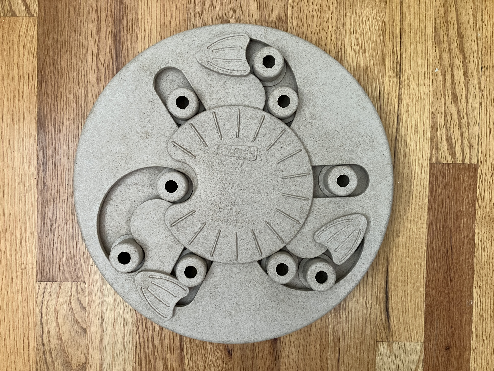

A Barely Viable Production
What happens when every prospect gets a personalized response to everything that matters to them — not a campaign pulled from a hat?
Traditional marketing automation starts with email autoresponders: canned messages fired based on open rates and clicks. Over time, branches, CRM triggers, and sales-rep handoffs might make it more sophisticated, but the content is still written in advance for a generic buyer.
Personalized AI marketing takes two leaps forward:
Natural language understanding replaces click-tracking. The system reads what a prospect asks and responds in kind.
Content is generated on the fly — whitepapers, tutorials, videos, coupons — tailored to this person, right now.

Nina Ottosson Hide-N-Slide · Level 2
Arlo accepts the challenge... and quickly makes a mockery of Level 2.
The Nina Ottosson by Outward Hound Hide-N-Slide is a Level 2 interactive dog puzzle toy. Dogs use their nose and paws to slide compartments and lift bone-shaped covers, revealing hidden treats. It encourages focus and problem-solving — ideal mental stimulation for young, energetic dogs.
View on Chewy →Early 30s · Dual-income couple · Chicago suburbs · Share one email address
Jake is a UX designer; Mia works in marketing analytics. They adopted Pickles — a four-month-old Labrador mix — six weeks ago from a shelter. Pickles is unambiguously their child. Their social feeds are already 40% dog photos.
They're both gone 7 a.m.–6 p.m. They worry about Pickles being bored, lonely, and destructive. They also worry — and will say so directly — that a Level 2 puzzle might be too easy for her after the first week.
They research obsessively before buying. They read reviews, watch YouTube, join subreddits, and ask questions. They expect brands to meet them where they are — informed, specific, and a little impatient with generic answers.
| Names | Jake & Mia Chen |
| Ages | Early 30s |
| Location | Chicago suburbs |
| Dog | Pickles, 4-month-old Lab mix |
| Concern | Separation anxiety; boredom |
| Objection | "Is this too easy for her?" |
| Budget | Not a gating factor |
| jake.mia.pickles@gmail.com |
A simulated exchange between Jake & Mia and the Personalized AI system. All content shown here would be generated on-the-fly in a real deployment.
Open discussion for roundtable participants. There are no right answers — the goal is to surface your reactions, questions, and instincts about where this is going.
| chris@gomobileiq.com | |
| Phone | 720.271.8187 |
| Web | gomobileiq.com |
| linkedin.com/in/csciora |
Scan to save my contact